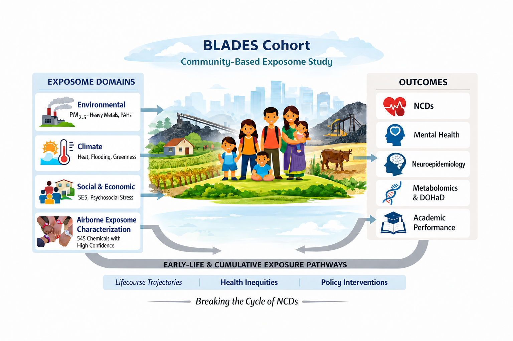
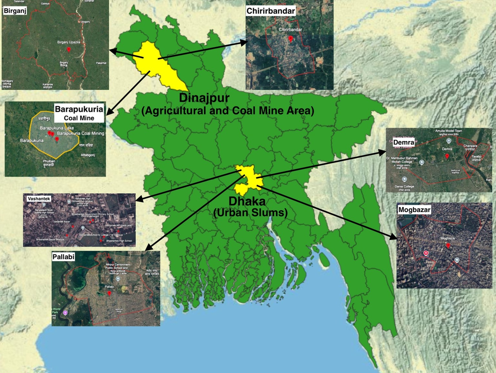
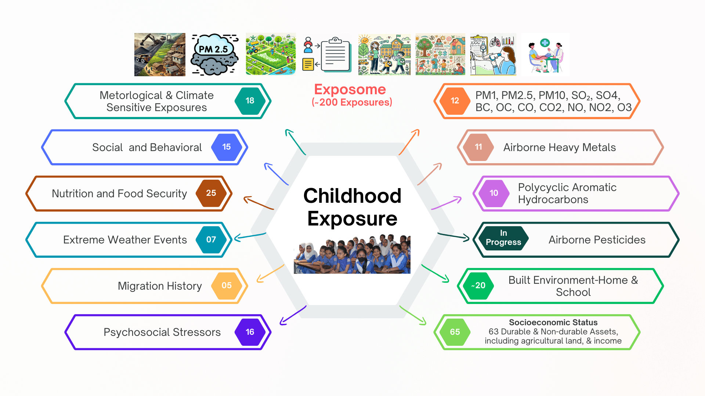
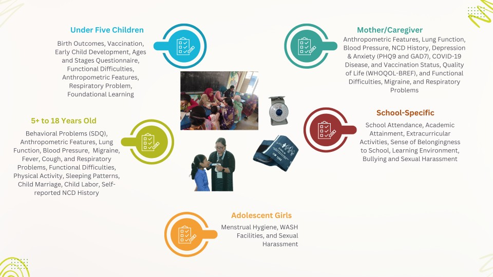

The Bangladesh Longitudinal Child-Adolescent Development, Education, and Environment Study (BLADES) is a community-based exposome study led by the South Asian Institute for Social Transformation (SAIST).

Overview and significance
Children and adolescents in low- and middle-income countries are exposed to multiple, co-occurring environmental, climate-related, and social stressors that shape development and long-term health, including the early emergence of non-communicable diseases (NCDs). In Bangladesh, high levels of air pollution, climate vulnerability, and structural inequities disproportionately affect maternal and child health. However, most epidemiologic studies examine these exposures in isolation, limiting our understanding of cumulative, interacting, and life-course effects.
The Bangladesh Longitudinal Child-Adolescent Development, Education, and Environment Study (BLADES) addresses this gap through a longitudinal, community-based cohort designed to capture the joint and time-varying effects of environmental, climate-sensitive, psychosocial, and structural exposures on child and adolescent development, as well as parental health and NCD risk.
BLADES is among the first cohorts in South Asia to apply a multipollutant, community-based exposome framework integrating environmental, climate, and social domains. The study combines traditional exposure assessment (ambient and indoor pollutants, heavy metals, PAHs, and climate-sensitive factors) with high-dimensional personal exposure profiling using wearable passive sampling wristbands, which identified 545 airborne chemical features across study regions.
Importantly, BLADES employs a triangulated exposure assessment strategy, integrating data from low-cost ambient and indoor air pollution sensors, filter-based air sampling with laboratory quantification of pollutants, and personal wearable measurements. This multimodal approach enhances exposure validity, captures spatial and temporal variability, enables cross-platform cross-validation, and reduces exposure misclassification in complex real-world settings.
Together, these approaches enable granular, high-resolution characterization of individual- and community-level exposure mixtures beyond conventional pollutant metrics and support advanced mixture, life-course, and causal inference analyses.
Overall objective
To quantify the joint, cumulative, and time-varying effects of environmental, climate-sensitive, psychosocial, and structural exposures on child and adolescent development, academic outcomes, and parental health, with a particular focus on early-life and intergenerational determinants of non-communicable disease risk in Bangladesh.
Design and methods
BLADES is a community-based longitudinal cohort established by the South Asian Institute for Social Transformation (SAIST) in 2021 across Dhaka and Dinajpur. Between 2022 and 2025, the study enrolled 2,455 households, including children under five, school-aged children (0–18 years), and their mothers/caregivers, with annual follow-up.

The study integrates a comprehensive exposome framework with high-resolution exposure assessment, including:
- Indoor and ambient air pollutants (PM1, PM2.5, PM10, SO2, CO, NO2, O3)
- Eleven heavy metals and ten polycyclic aromatic hydrocarbons (PAHs)
- Climate-sensitive exposures (e.g., greenness, temperature, flooding)
- Detailed socioeconomic, psychosocial, and household-level data
In addition, personal passive sampling using wearable wristbands was employed to characterize the airborne exposome, identifying 545 distinct chemical compounds across both study regions.

Outcomes include child growth, early childhood development, school attendance and academic performance, as well as parental and adolescent cardiometabolic and respiratory health, including blood pressure, lung function, mental health, functional difficulties, and validated measures (ASQ-3, SDQ, quality of life). The study emphasizes early-life and intergenerational determinants of NCD risk, capturing health trajectories across children, adolescents, and parents.

Cohort profile
Approximately 30% of participants are under five years of age, 70% are school-aged children, and 45% of households fall within the poorest wealth quintile. Exposure levels are high across study areas, with higher concentrations in Dhaka and coal-mining regions. For example, median PM2.5 concentrations reached 104 µg/m³ in Dhaka and 70 µg/m³ in Dinajpur. Ambient lead ranged from 10 to 3,802 ng/m³, arsenic from 3.86 to 34 ng/m³, and PAHs from 34 to 207 ng/m³.
Expected impact
BLADES will generate novel evidence on how co-occurring environmental, climate, and social exposures shape child and adolescent development, as well as parental and intergenerational NCD risk, across the life course, with particular relevance to early-life determinants of disease. By integrating high-dimensional exposome data with longitudinal health outcomes, this study will inform targeted, equity-focused interventions and advance methodological approaches for exposome research in resource-constrained settings.
Acknowledgements
BLADES is supported by the SAIST Foundation and Structural Engineers Ltd. Charitable Foundation (SEL) and was initially supported by funding of the International Development Research Centre (IDRC), the Global Partnership for Education — Knowledge and Innovation Exchange (GPE KIX).
Collaborators
Institutional partners in research implementation and training.